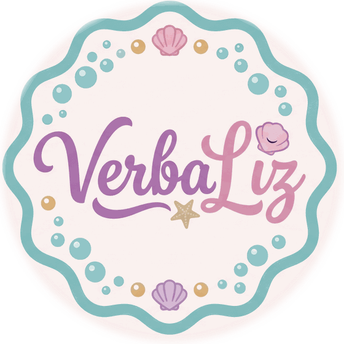

Qual prancha?
Segure 3 segundos no canto superior direito para abrir a configuração.
Segure 3 segundos no canto superior direito para abrir a configuração.

Quem não fala também tem o que dizer.
O verbo na ponta do dedo.
Toque do adulto. Liga tela cheia, trava na horizontal e libera o som. Para abrir a configuração depois, segure 3 segundos no canto superior direito.